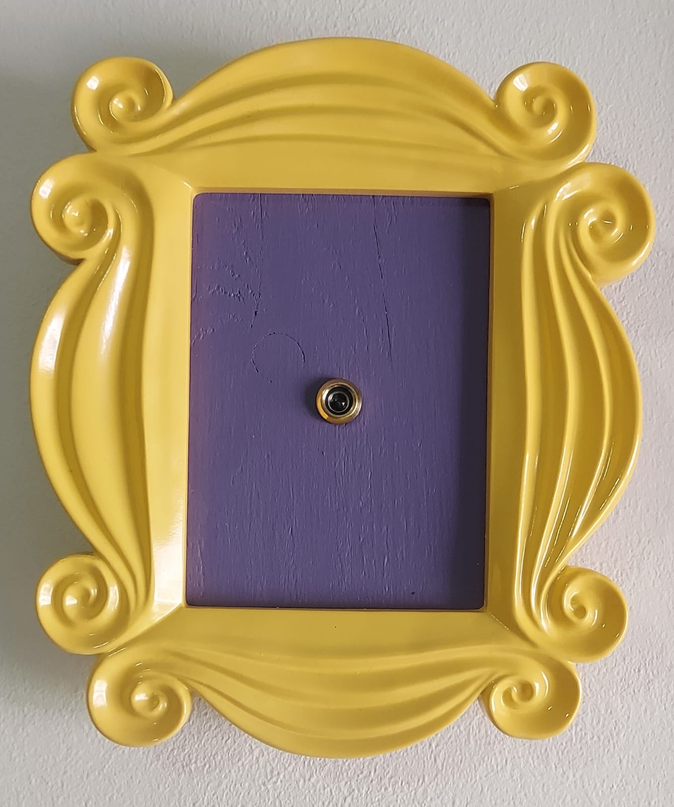
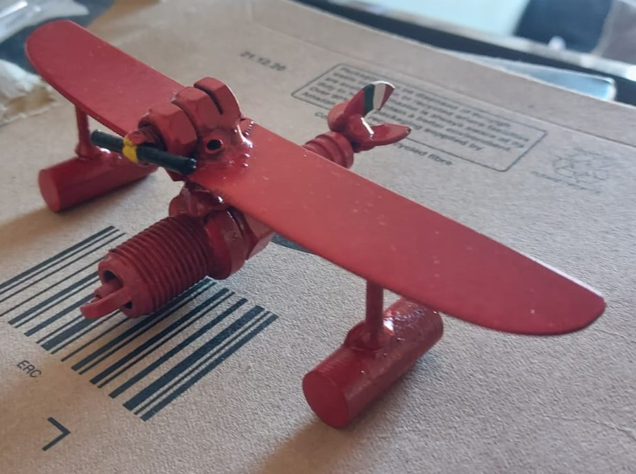
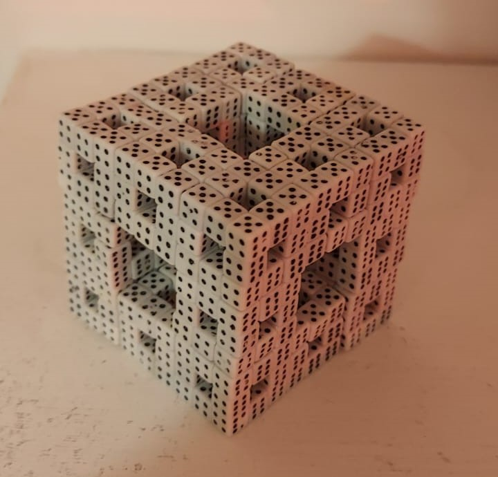
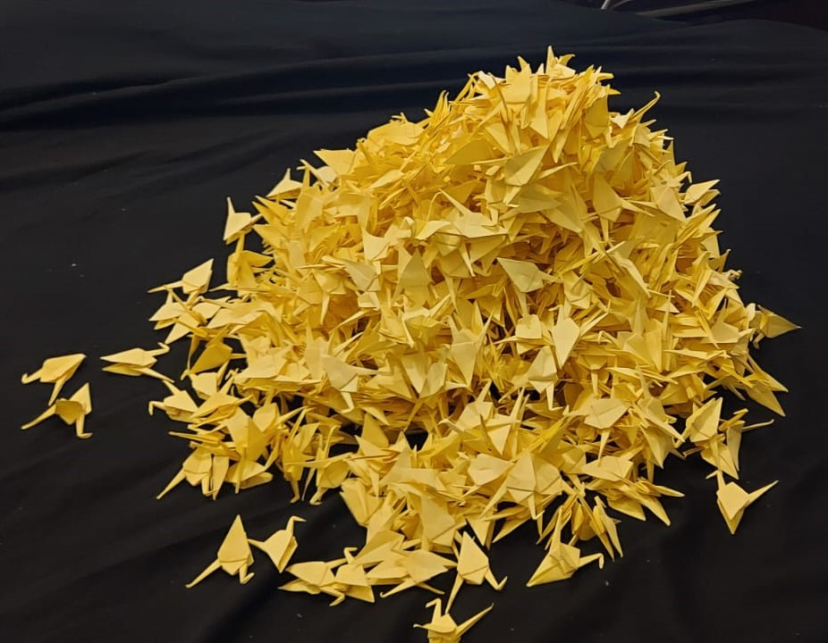
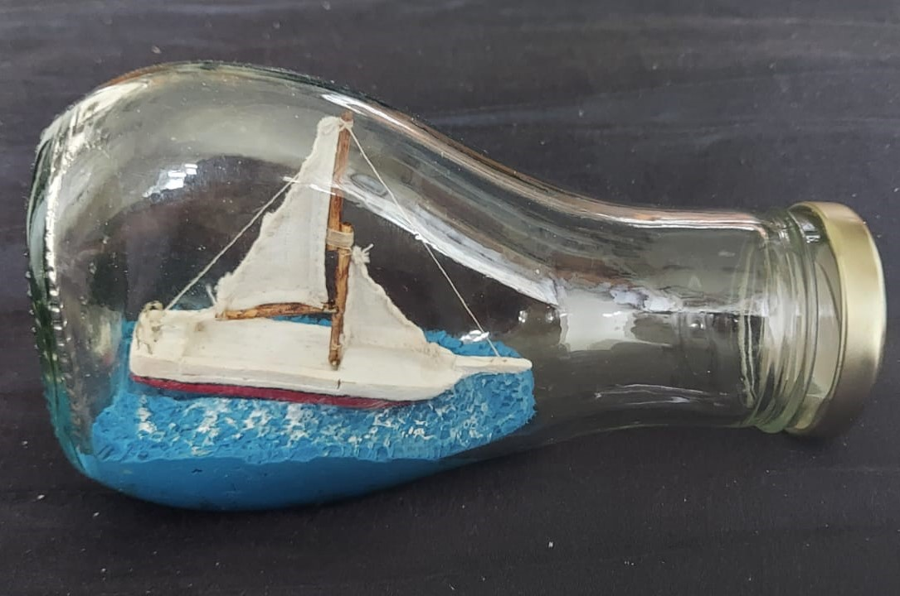
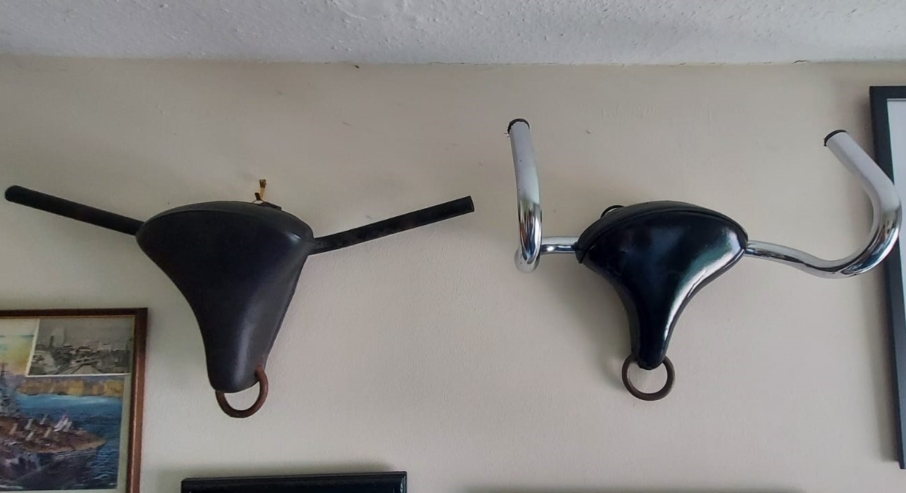
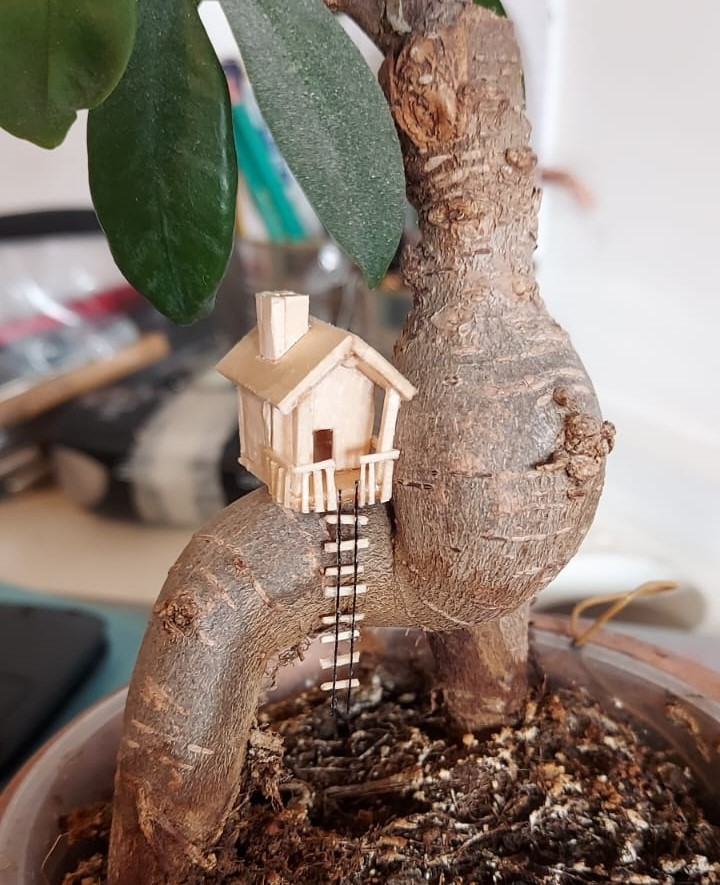

DIY, Crafts, Construction & Upcycling
Some of the silly little things I've made
×


A section of the door from Monica's apartment in 'Friends' (with
working peep-hole).

Porco Rosso's seaplane from the Studio Ghibli film 'Porco Rosso',
made out of a spark plug, butter knives, bolts and other scrap
metal.

A Menger Sponge made out of dice.

A thousand origami paper cranes.

A ship in a bottle, with canvas sails.

Two bull heads made from bicycle setas, bicylce handle bars and
some scrap metal rings, a homage to Pablo Picasso's 'Bull's Head'.

A miniature tree house with a rope ladder made out of wood and
thread mounted on Ficus retusa.